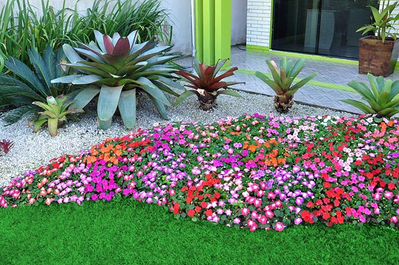

|  |
|---|
Jardim tropicalAlém dos aspectos decorativos que as plantas proporcionam ao ambiente, é comprovado que elas ajudam na qualidade de vida das pessoas ao seu redor. Entre os benefícios está que as plantas absorvem dióxido de carbono e geram oxigênio, ajudando na qualidade do ar e melhorando o ambiente para pessoas com problemas respiratórios, pois são capazes de aumentar a umidade do ar, por exemplo. Leia mais |
|---|